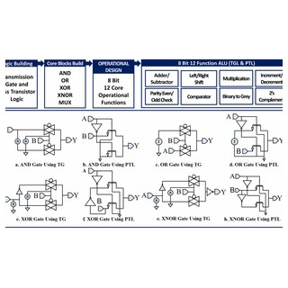

A Comparative Logic-Style Framework for 8-Bit 12-Function Efficient ALU Design Using Transmission Gate and NMOS Pass Transistor Logic in 90-nm CMOS

Abstract
Energy-efficient and high-speed arithmetic units are fundamental building blocks in resource-constrained systems, including Internet of Things (IoT) devices and embedded processors. This requirement necessitates the development of Arithmetic Logic Units (ALUs) optimized in terms of power consumption, silicon area, and performance in advanced nanoscale technologies. In this work, the design and comparative analysis of two 8-bit, 12-function ALUs implemented using Transmission Gate (TG) logic and NMOS Pass Transistor Logic (N-Pass) are presented using Cadence Virtuoso with GPDK 90 nm technology. The proposed architectures support a wide range of operations, such as addition, subtraction, multiplication, bitwise shifting, and parity generation. The performance is evaluated based on critical parameters, including propagation delay, power consumption, operating frequency, and transistor count. Simulation results at a supply voltage of 1.8 V indicate that the TG-based ALU achieves superior speed performance, exhibiting a propagation delay of 0.1655 ns and an operating frequency of 58.9 MHz, making it suitable for high-performance computing applications such as microprocessors. Conversely, the N-Pass-based ALU demonstrates improved power efficiency, with an average power consumption of 0.19275 W and power dissipation of 1.67 mW, which are favorable for low-power IoT applications. The comparative analysis highlights the inherent design trade-offs, revealing a 99.76% reduction in delay for the TG implementation and a 98.36% reduction in power dissipation for the N-Pass design, thereby providing valuable insights for selecting appropriate logic styles in application-specific integrated circuit design.
In one line
Compares transmission-gate and NMOS pass-transistor logic styles for an efficient 8-bit, 12-function ALU in 90 nm CMOS.
Cite
@article{farhan2026a,
title = {A Comparative Logic-Style Framework for 8-Bit 12-Function Efficient ALU Design Using Transmission Gate and NMOS Pass Transistor Logic in 90-nm CMOS},
author = {Saquib Farhan and Sadman Rahman and Sanjida Sultana and Md. Tawfiq Amin and Gourab Datta},
journal = {Analog Integrated Circuits and Signal Processing},
year = {2026},
url = {https://link.springer.com/article/10.1007/s10470-026-02664-5}
}